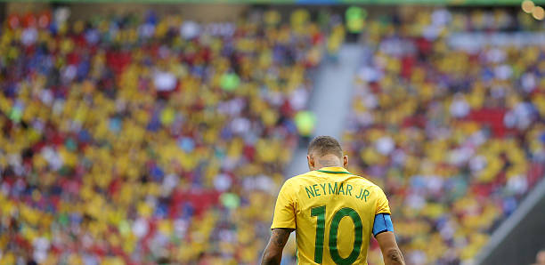

A Clínica Neymar de Recuperação Física é um espaço inovador dedicado ao cuidado e à reabilitação de jogadores de futebol, tanto profissionais quanto amadores. Fundada pelo renomado jogador Neymar, a clínica se destaca por sua abordagem personalizada e pela integração de tecnologia avançada no processo de recuperação.
Desde a sua inauguração, a clínica tem se comprometido em proporcionar um ambiente acolhedor e motivador, onde cada atleta recebe a atenção e os cuidados necessários para enfrentar os desafios de sua carreira. A equipe é composta por fisioterapeutas, médicos especializados em medicina esportiva, nutricionistas e preparadores físicos, todos com vasta experiência no atendimento a atletas.
Os tratamentos oferecidos na clínica são projetados para atender às necessidades específicas de cada jogador, combinando métodos tradicionais e técnicas inovadoras. Utilizamos equipamentos de última geração para monitorar e otimizar a recuperação muscular, permitindo que os atletas voltem a atuar em seu melhor nível.
Além da reabilitação, a clínica também se dedica ao aprimoramento físico, oferecendo programas de treinamento que visam aumentar a resistência, agilidade e força dos jogadores. Com uma visão voltada para a saúde e o bem-estar, a Clínica Neymar se tornou referência no setor, ajudando atletas a superar lesões e a alcançar seu máximo potencial no futebol.
Aqui, cada jogador é tratado como uma prioridade, recebendo suporte integral para que possa voltar ao campo mais forte e preparado.
